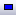
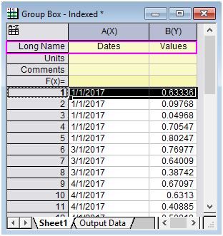

Gruppierte Boxdiagramme - Indexdaten
GroupedBoxCharts-IndexedData

Datenanforderungen
Die Eingabedaten sollten aus Arbeitsblattspalten stammen. Es ist auch erforderlich, mindestens eine anderen Datenbereich als gruppierte Spalte(n) zu haben.
Diagramm erstellen
Wählen Sie die gewünschten Daten aus.
Wählen Sie im Menü .
oder
Klicken Sie auf die Schaltfläche Gruppierte Boxdiagramme, Index  auf der Symbolleiste 2D-Grafiken.
auf der Symbolleiste 2D-Grafiken.
In dem sich öffnenden Dialog wählen Sie den Gruppenbereich und das Diagrammdesign aus, um das gruppierte Boxdiagramm zu erstellen.
Weitere Einzelheiten zum Erstellen und benutzerdefinierten Anpassen finden Sie auf der Seite zum Boxdiagramme erstellen.
Der Dialog plot_gboxindexed
| Datenspalte(n) |
Dieser Zweig wird zum Festlegen der Eingabedaten verwendet. |
| Gruppenspalte(n) |
Enthalten sind hierbei ein Anzeigefeld und eine Symbolleiste mit fünf Schaltflächen  : :- Anzeigefeld
- Das/Die ausgewählte/n Gruppenbereich/e werden in diesem Feld angezeigt. Zum Zeichnen müssen Sie eine andere Option als <Kein> auswählen. Die Abfolge der Datenbereiche bestimmt die Gruppierungsordnung, wobei der erste Bereich die ersten Gruppen mit Daten versorgt, der zweite Bereich die zweiten Gruppen innerhalb der ersten Gruppen und so weiter.
- Schaltfläche Hinzufügen
 - Klicken Sie auf diese Schaltfläche und wählen Sie dann eine Spalte vom Menü aus; oder klicken Sie auf Spalten auswählen, um den Spaltenbrowser und fügen Sie (eine) Spalte/n in das Anzeigefeld als Gruppierungsbereich(e). Sie können bis zu 5 Gruppierungsbereiche hinzufügen.
- Schaltfläche Entfernen
 - Die ausgewählten Datenbereiche werden aus dem Anzeigefeld entfernt. Diese Schaltfläche ist verfügbar, wenn Sie einen oder mehrere Datenbereiche im Feld Gruppenspalte(n) auswählen.
- Schaltfläche Nach oben verschieben
 - Die ausgewählten Datenbereiche werden im Anzeigefeld nach oben verschoben. Die Gruppierungsabfolge wird geändert.
- Schaltfläche Nach unten verschieben
 - Die ausgewählten Datenbereiche werden im Anzeigefeld nach unten verschoben. Die Gruppierungsabfolge wird geändert.
- Schaltfläche Alle auswählen 
- Alle Datenbereiche im Feld Gruppenspalte(n) werden ausgewählt.
|
| Diagrammdesign |
Wählen Sie aus einer Liste der Standarddiagrammdesigns für das gruppierte Boxdiagramm. |
| Ausgabedaten |
Legen Sie fest, wo die berechneten Daten ausgegeben werden. |
Zusätzlich können Sie sich das finale Diagramm in diesem Dialog anzeigen lassen.
Hinweis: Die Option Neu berechnen ist in diesem Dialog standardmäßig auf Auto gesetzt.
| Hinweis: Wenn die ausgewählten Gruppenspalte(n) ergeben, dass mehr als 200 Gruppen erzeugt werden, zeigt der Dialog plot_gboxindexed eine Warnmeldung an, dass die Berechnung langsam sein könnte, und fordert den Anwender auf zu bestätigen, dass die Berechnung fortgesetzt werden soll (Diagrammvorschauen werden ebenso deaktiviert). Dieser Schwellenwert von 200 Gruppen wird durch Ändern des Wert der LabTalk-Systemvariablen @NC modifiziert. |
Beispiel 1
 |
- Öffnen Sie eine neue Arbeitsmappe.
- Klicken Sie auf die Schaltfläche
 , um die Datei Categorical Data.dat im Verzeichnis <Origin>\Samples\Graphing\ zu importieren. , um die Datei Categorical Data.dat im Verzeichnis <Origin>\Samples\Graphing\ zu importieren.
- Markieren Sie Spalte Col(C) und Col(D) und überprüfen Sie, ob "Als Kategorisch setzen" in Menü: Spalte aktiviert ist.
- Klicken Sie doppelt auf "Unsortiert" in der Zeile Kategorien, um den Dialog Kategorien zu öffnen (den gleichen wie bei der Registerkarte Kategorien), und sortieren Sie die Spalte Col(C) und Col(D) in aufsteigender Reihenfolge.
- Markieren Sie Spalte B und wählen Sie Zeichnen: Statistikdiagramme: Gruppierte Boxdiagramme, Index im Hauptmenü, um den Dialog plot_gboxindexed zu öffnen.
- Klicken Sie im Abschnitt Gruppenspalte(n) auf die dreieckige Schaltfläche oben rechts und wählen Sie die Spalten Col(C) und Col(D) in dieser Abfolge.
- Wählen Sie die Option Box_Filled Diamond unter Diagrammdesign.
- Stellen Sie sicher, dass Ausgabedaten auf <neu> gesetzt ist, so dass die berechneten Daten in einem neuen Arbeitsblatt ausgegeben werden.
- Klicken Sie auf OK, um die Zeichnung zu erstellen.

|
Beispiel 2
|
Dieses kurze Tutorial zeigt IHnen, wie Sie ein Gruppiertes Boxdiagramm mit Indexdaten zeichnen, wobei Sie Datums-/Zeitdaten verwenden, um Gruppen zu definieren.
- Beginnen Sie mit dem Auswählen und Kopieren der X- und Y-Daten unten in diesem Tutorial. Schließen Sie die Headerzeileninformationen Dates und Values in Ihre Auswahl mit ein.
- Öffnen Sie eine neue Arbeitsmappe und fügen Sie die kopierten Daten in die erste Zelle in Sheet1 ein.
- Klicken Sie mit der rechten Maustaste auf die erste Datenzeile im Arbeitsblatt und wählen Sie Als Langname setzen, um den Text zur Spaltenberechnungszeile Langname zu machen. Ihre Arbeitsmappe sollte in etwa so aussehen:
- 
- Auch wenn die Daten in Spalte A wie Datumsdaten aussehen, werden sie standardmäßig als Text behandelt, bis Sie das Spaltenformat angepasst haben. Markieren Sie Spalte A, klicken Sie mit der rechten Maustaste und wählen Sie Einstellungen. Klicken Sie auf die Registerkarte Eigenschaften und setzen Sie unter Optionen das Format auf Datum und die Anzeige auf dd.MM.yyyy (die erste Option in der Auswahlliste - z. B. 02.08.2018). Klicken Sie dann auf OK. Die Datumsdaten sollten jetzt rechts ausgerichtet sein, ein Hinweis darauf, dass Origin sie als numerische Daten erkennt.
- Markieren Sie Spalte B und klicken Sie auf Zeichen > 2D: Gruppierte Boxdiagramme: Gruppierte Boxdiagramme, Index. Klicken Sie im Dialog plot_gboxindexed auf den Pfeil rechts von Gruppenspalte(n) und wählen Sie A(X): Dates. Klicken Sie dann auf OK.
- Klicken Sie doppelt auf die Hilfsstrichsbeschriftungen der X-Achse, um den Dialog der X-Achse zu öffnen. Legen Sie auf der Registerkarte Skalierung den Datenbereich mit 01.12.2016 00:00:00.000 bis 01.06.2017 00:00:00.000 fest. Geben Sie unter Große Hilfsstriche neben Wert 1 Monat ein.
- Klicken Sie auf die Registerkarte Beschriftung der Hilfsstriche und setzen auf der Unterregisterkarte Format die Ausrichtung auf Zentriert und klicken Sie auf OK. Das Diagramm sollte folgendermaßen aussehen:
 - Beachten Sie, dass die Datumsdaten auf einer Skala mit wahren Daten gezeichnet werden, die proportionale Abstände hat. Es werden keine Daten bei der Hilfsstrichsbeschriftung 01.02.2017 gezeichnet.
|
| Daten |
Werte |
| 01.01.2017 |
0.63336 |
| 01.01.2017 |
0.09768 |
| 01.01.2017 |
0.04968 |
| 01.01.2017 |
0.70547 |
| 01.01.2017 |
0.80247 |
| 01.03.2017 |
0.76977 |
| 01.03.2017 |
0.64009 |
| 01.03.2017 |
0.38742 |
| 01.04.2017 |
0.67097 |
| 01.04.2017 |
0.6313 |
| 01.04.2017 |
0.40885 |
| 01.04.2017 |
0.50818 |
| 01.04.2017 |
0.23556 |
| 01.04.2017 |
0.64873 |
| 01.04.2017 |
0.45731 |
| 01.05.2017 |
0.86434 |
| 01.05.2017 |
0.65003 |
| 01.05.2017 |
0.71796 |
Vorlage
gBox.otp (im Origin-Ordner installiert)
Hinweise
- Wenn es mehr als einen Gruppenbereich gibt, wird die Hilfsstrichsbeschriftung der X-Achse standardmäßig in Tabellen angezeigt. Sie können dieses Format im Zweig Tabelle auf der Seite Beschriftung der Hilfsstriche des Dialogs Achsen festlegen.
- Standard ist, dass die Untergruppierung basierend auf der Berechnung des Gruppierungsbereiches aktiviert ist und Sie den Abstand zwischen oder innerhalb der Teilgruppen getrennt voneinander auf der Registerkarte Abstände festlegen.
- Sie können die Legende, die speziell für Boxdiagrammkomponenten ausgelegt ist, erstellen/benutzerdefiniert anpassen, indem Sie im Menü auf Grafik: Legende: Boxdiagrammkomponenten klicken, wenn das Boxdiagramm aktiv ist.
- Es ist möglich, ein gruppiertes Boxdiagramm aus Rohdaten zu erstellen.
- Wenn Sie Box_Column Scatter als Diagrammdesign auswählen, können Sie ein gruppiertes Punkt-Säulendiagramm erstellen.
- Wenn Sie Box_Connect Mean Line als Diagrammdesign auswählen, können Sie ein gruppiertes Boxdiagramm mit einer verbundenen Mittelwertlinie erstellen.
- Wenn Sie Box_Interval Plot als Diagrammdesign auswählen, können Sie ein gruppiertes Intervalldiagramm erstellen.
- Wenn Sie Box_Mean Bar with SE als Diagrammdesign auswählen, können Sie ein statistisches Balkendiagramm mit Standardfehlerbalken erstellen.